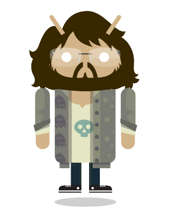

2012 Tehnomegdan is the first annual IT conference and hackathon, concentrated on mobile technology development and entrepreneurship.
This year's Tehnomegdan will be held at the Chamber of Commerce and Industry of Serbia (Resavska 13-15, Belgrade), on the 25. and 26. of October.
On October 25th, we will have tech talks by renowned guest speakers and companies from the domain of mobile tech. The hackathon will begin in the evening of the 25th and end in the evening of the 26th. Valuable prizes will be awarded for the top performers.
Participation is FREE OF CHARGE, for both the contestants and the guests!
The mission of Tehnomegdan is spreading knowledge about current trends in mobile technology development and startup entrepreneurship among students and industry professionals, as well as networking among the most successful and innovative people and companies who work in the field of mobile technology and mobile app development.
- 09:00 Gathering at the Chamber of Commerce and Industry of Serbia
- 09:30 Opening ceremony
- 10:00 First round of talks, 3 guest speakers
- 13:00 Lunch break
- 14:00 Second round of talks, 3 guest speakers
- 17:00 Open house (networking and mingling)
- 19:00 Hackathon begins
- 07:00 Continuation of the hackathon at the Chamber of Commerce and Industry of Serbia
- 19:00 Elevator pitches by hackers, judging and dinner
- 21:30 Awards cermony and official closing ceremony
Thursday 10/25/2012
Friday 10/26/2012
Organizers reserve the right to change the program as needed
These are the people and organizations without whom this event wouldn't be possible. We would like to express our immense gratitude for all the help they provided us.
Biography
Bill Magnuson is the co-founder and CTO of Appboy, a customer relationship management platform for mobile app developers and marketers.
Appboy's SDK and web dashboard enable mobile app owners to create and receive feedback from/market to user segments and provides individualized user insights, event monitoring, a feedback center, and marketing options.
Previously, Bill was a Software Developer at Bridgewater Associates and a Software Engineer at Google, where he worked on App Inventor for Android, later taken over by the MIT Media Lab. He was a winner of the 2011 TechCrunch Disrupt Hackathon and a winner of the 2010 North American Debating Championship.
Originally from Minnesota, Bill holds a Masters Degree in Electrical Engineering & Computer Sciences (EECS) and a Bachelor of Science in Computer Science with a minor in Economics from the Massachusetts Institute of Technology.
Topic
How to Expand, Engage and Monetize your Mobile User Base by Using Analytics, Marketing and CRM tools
We're at the end of 2012 and it has become clear that the mobile app economy is leaving the vast majority of developers out in the cold. The revenue story is lopsided -- a handful of apps have turned into gold mines, but most of them are still standing in the river with a pan hoping for a stray nugget.
With over a million apps in existence, simply building your app does not mean that users will come. In this talk you'll learn how to use customer relationship management, analytics and marketing tools to turn your app into a full fledged business.
We'll start with a discussion of the many facets of analytics spanning from macro trends in the app stores all the way down to the demographics and actions of your individual users. You'll then learn about how to use customer relationship management tools to collect and analyze that data in order to execute on marketing campaigns to engage, grow and monetize your user base.
Biography

Aleksadnar Petković radi kao Business Development Manager u agenciji za digitalni marketing Carnation Group.
Svoja iskustva rado deli sa učesnicima na konferencijama u regionu, gde je držao predavanja o različitim konceptima mobilnog marketinga.
Autor je bloga www.mobilnimarketing.me
Aktivan član grupe za mobilni marketing u IAB Srbija.
Topic
O čemu voditi računa prilikom kreiranja mobilnog websajta?
Sve veća dostupnost mobilnog interneta i napredak tehnologije su doveli do toga da se na globalnom nivou, broj pregledanih internet strana na mobilnim uređajima opasno približio broju pregledanih internet strana uz pomoć računara. Taj trend će se neminovno nastaviti i u budućnosti.
Korisnici imaju sve manje slobodnog vremena i mnoge odluke donose u realnom vremenu, dok su u pokretu, van kuće ili van kancelarije.
Imati websajt više nije dovoljno i kompanije uveliko prave strategiju koja će njihovo poslovanje proširiti i na mobile. Saznajte o kojim stvarima treba voditi računa prilikom projektovanja i razvoja mobilnog websajta.
Biography
Đorđe Nijemčević je diplomirao na Odseku za elektroniku ETF u Beogradu 2006. Od 2007. radi kao softverski inžinjer u Microsoft razvojnom centru u Beogradu.
Učestvovao je na razvoju optičkog prepoznavača teksta, a trenutno se bavi istraživanjem novih koncepata unutar Bing Augmented Reality grupe. Od 2005. je stručni konsultant na seminaru Primenjena Fizika i Elektronika u IS Petnica.
Oblasti interesovanja su mu digitalna obrada slike i mašinsko učenje. Bavi se padobranstvom i fotografijom, zaljubljenik je u džez muziku.
Topic
Machine learning in mobile development
- What is machine learning and what is it used for
- Examples of machine learning on mobile devices
- Showcase: Microsoft Translator
- Demo: Building and training mobile phone shake-detector using a neural net
Biography
Milan Milojic graduated from the Faculty of Electronic Engineering at the University of Nis. He started working part-time at Morena as a student in 2008 and ended up being junior partner and board member from 2011.
With strong background in developing enterprise solutions and databases he switched to mobile applications development out of curiosity in 2010 and he liked it so much that he has been doing it ever since.
Topic
Design patterns for Android when dealing with RESTful services
Mobile applications rely heavily on data from the “cloud.” In order to build fast, reliable and responsive apps you need to have the right tools for the job. In this talk we will discuss possible design patterns for dealing with data retrieval from the remote servers.
O predavaču
Nikola Tomović je diplomirao na Ekonomskom fakultetu u Beogradu na smeru za medjunarodnu ekonomiju i spoljnu trgovinu. Više godina aktivno prati razvoj IT industrije i intertnet scenu sa posebnim fokusom na internet start-up kompanije i razvoj specifičnih biznis modela.
Osnivač je beogradskog start up-a NUL Apps koji je lansirao prvi turistički audio vodič u regionu pod nazivom Belgrade Genie (android mobilna aplikacija) sa kojim je osvojio više priznanja. Medju najznačajnijim uspesima ističe učešće na finalu Seedcamp-a u Zagrebu, maja ove godine.
Tema predavanja
- Zasto i kako pokrenuti sopstveni start-up?
- Iskoristite prednosti dinamicnog okruzenja i uz minimalan rizik realizujte svoju ideju.
- Prednosti IT start-up-a u odnosu na tradicionalne start-up kompanije.
- Nova tehnoloska revolucija, razvoj trzista mobilnih aplikacija i ekonomske implikacije altrnativnih marketing metoda.
- Lokalna akcija - globalna reakcija.
Registration for Tehnomegdan is open to everyone, and is completely free.
You can attend Tehnomegdan as either a guest or as a hacker participating in the hackathon. Everyone, whether guest or hacker, is invited to both days' programs; thus, you should only sign up as one of the two.
Registering as a guest
If you wish to register as a guest, all you need to do is click the registration button in the top-right corner of the page and fill out the form. Due to space limitations, we can only accept 80 guests and 70 hackers; therefore, spots will be offered to registrants on first-come first-serve basis. In addition, we will contact you about a week prior to the event to ask for confirmation of your attendence. If you have any questions, please don't hesitate to contact us at tehnomegdan@tehnomegdan.rs
Registering as a hacker
In order to participate at the hackathon, and get a chance to pitch your groundbreaking ideas to a jury of professionals and investors, as well as win valuable prizes, all you need to do again is fill out the form by clicking the "Register" button in the upper-right corner of the page.
Tehnomegdan hackathon is a team event; the teams must consist of 2 or 3 people. When filling out the form, enter all your teammates' information in addition to your own. If you wish to participate, but don't have a partner, feel free to register and we will assign you to a team with one or two more people.
Finally, you can be a VIP hacker. In fact, it is highly encouraged that you try and get the VIP status. Due to limited space, we can only invite so many hackers. The VIP hackers will be guaranteed participatoin, after which the rest of the hackers will get spots on a first-come first-serve basis. In addition to a guaranteed spot, the VIP hackers will have other on-site surprise benefits! All you need to do to get VIP status (in addition to registering as everyone else), is send us one email. Instructions on how to do so are written out below. For any other questions and concerns, please don't hesitate to contact us at tehnomegdan@tehnomegdan.rs. Happy hacking!
How to get VIP status
The email to which you apply for VIP status is AABBCCDD@tehnomegdan.rs, where each of AA, BB, CC, DD should be replaced with answers to the below questions, and should be represented as a single byte written out in hex, including any leading zeroes if necessary.
| AA | Contents of the 511th byte on a hard drive which contains a running version of Windows XP |
| BB | Largest prime factor of the total number of files in the official distribution of the Android SDK for linux, r20.0.3 |
| CC | Number of times, after main() executes, that the global variable b changes value in the following C program (Note: not gets assigned a value, changes value):
#include <stdio.h>
int b = 0;
int f1(int b) { return ++b; }
int f2(int *a) { return ++*a; }
int f3(int a) { return 2*b; }
int f4(int *a, int c) {
b = c;
b += *a++;
return b;
}
int main() {
int a, *c;
a = 1, b = 2, c = &b;
b = f4(c, f4(&a, f3(f1(f2(c)))));
printf("%d\n", b);
return 0;
}
|
| DD | Number of days between Unix epoch and the date of the iPhone App Store launch, modulo 256 |
Tehnomegdan
 Tehnomegdan
Tehnomegdan@tehnomegdan
 tehnomegdan@tehnomegdan.rs
tehnomegdan@tehnomegdan.rs
Srdjan Krstic
Project ManagerSrdjan Krstic@srdjan_krstic
srdjan.krstic@tehnomegdan.rs
Marko Milenkovic
Project ManagerMarko Milenkovicmarko.milenkovic@tehnomegdan.rs